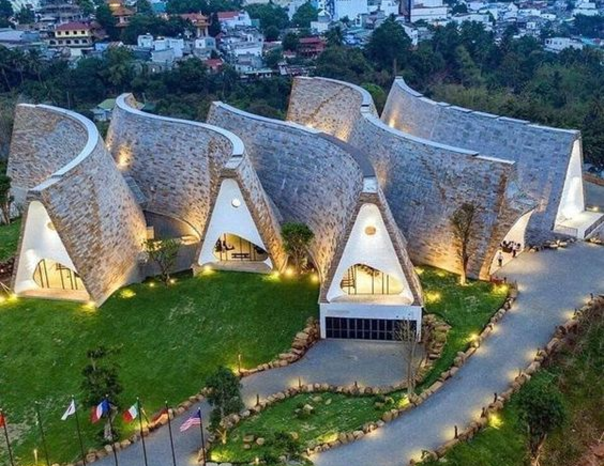
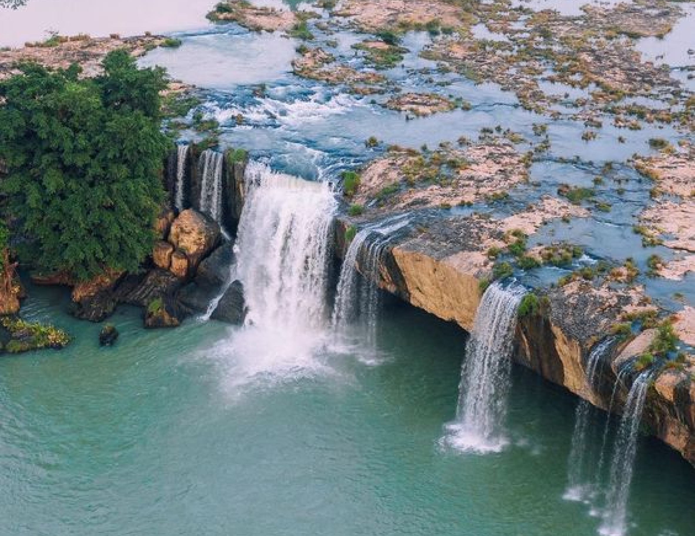
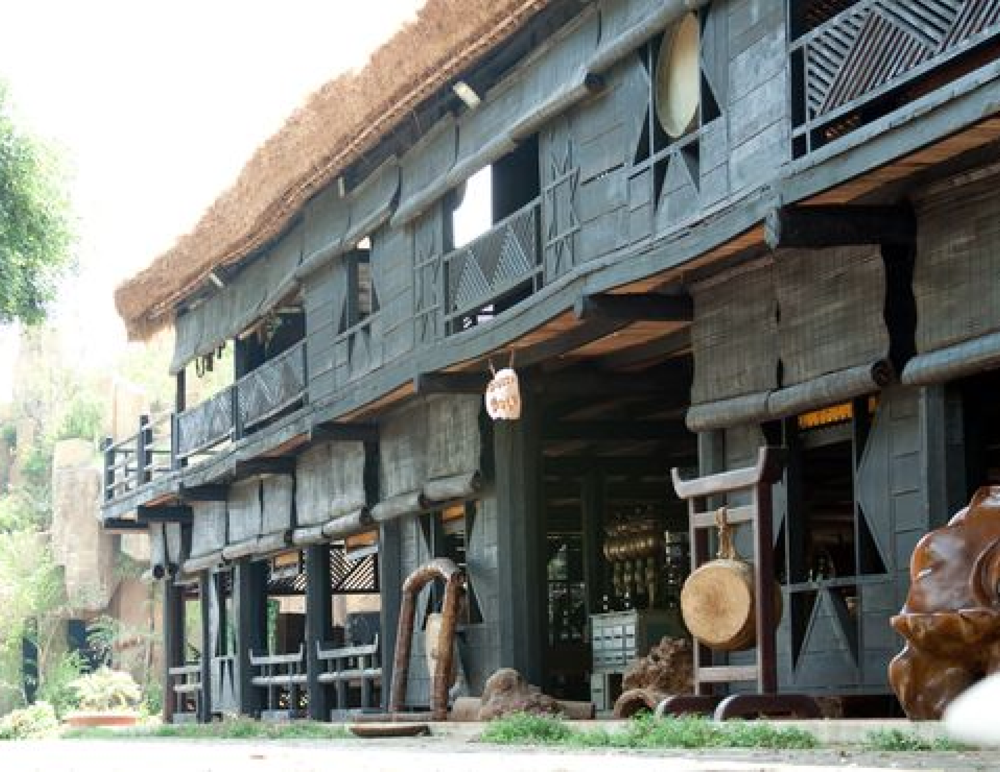

buon ma thuot
BUON MA ThUOT
Buon Ma Thuot, the capital of Dak Lak Province in the Central Highlands, is known as the coffee capital of Vietnam. Surrounded by vast coffee plantations, the city is famous for its rich coffee culture and vibrant street cafes.
Besides coffee, Buon Ma Thuot offers visitors a unique glimpse into the traditions of the local ethnic groups and is a gateway to the stunning natural beauty of the Central Highlands, with waterfalls, national parks, and serene landscapes just a short distance away.
UNMISSABLE ATTRACTIONS

Buon Ma Thuot Coffee Museum
The Buon Ma Thuot Coffee Museum in Vietnam's coffee capital celebrates the region's coffee heritage. Designed like traditional longhouses, it blends culture with modern style. Visitors can explore exhibits on coffee-making, history, and the region's deep coffee roots, making it a must-see for enthusiasts.
Adress:
Buon Ma Thuot Coffee Museum, Nguyen Đinh Chieu Street, Buon Ma Thuot City, Dak Lak Province, Vietnam.
Dray Nu and Dray Sap Waterfalls
Dray Nu and Dray Sap Waterfalls, near Buon Ma Thuot, are iconic natural attractions in the Central Highlands. Dray Nu, the "Niagara of Vietnam," impresses with its powerful drop and misty display, while Dray Sap is known for its wide, cascading tiers and lush forests. Both offer stunning views and a peaceful retreat into the region's raw, majestic beauty.
Adress:
Dray Nu and Dray Sap Waterfalls, Buon Ma Thuot, Dak Lak Province, Vietnam.


Trung Nguyen Coffee Village
Trung Nguyen Coffee Village in Buon Ma Thuot is a top destination for exploring Vietnam's coffee culture. Visitors can experience the full journey from bean to cup, tour plantations, learn traditional brewing, and sample premium coffee. The village highlights the Central Highlands' rich coffee heritage and offers insight into one of Vietnam's key exports.
Adress:
Trung Nguyen Coffee Village, Buon Ma Thuot, Đak Lak Province, Vietnam.
HIDDEN GEMS OF HANOI

KON TUM - BUON MA THUOT - BUON DON - PLEIKU - KONTUM - MANG DEN
4 days
Availability : Every day
1 people